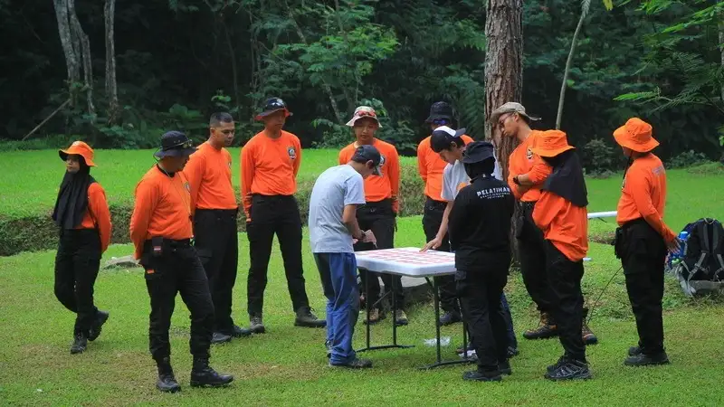

Cara memilih penyedia jasa outbound acara purna tugas yang tepat meliputi memeriksa pengalaman, portofolio, fasilitas ramah lansia, dan standar keselamatan yang diterapkan.
- Penyedia jasa yang berpengalaman menangani peserta lanjut usia menjadi pertimbangan utama.
- Portofolio acara serupa membantu memastikan kesesuaian konsep dengan kebutuhan instansi.
- Fasilitas ramah lansia dan standar keselamatan wajib dikonfirmasi sebelum acara berlangsung.
- Transparansi anggaran dan kejelasan rincian layanan mencegah kesalahpahaman di kemudian hari.
- Waktu pemesanan yang cukup jauh dari tanggal acara memberi ruang persiapan yang lebih matang.
Bagaimana Cara Memilih Penyedia Jasa Outbound Acara Purna Tugas yang Tepat?
Cara memilih penyedia jasa yang tepat dimulai dari memeriksa pengalaman menangani acara serupa, meninjau portofolio, dan memastikan kesiapan fasilitas bagi peserta lanjut usia.
Pengalaman menjadi indikator penting karena penyedia jasa yang terbiasa menangani outbound acara purna tugas umumnya lebih memahami kebutuhan khusus peserta lanjut usia, mulai dari intensitas aktivitas hingga kebutuhan istirahat yang lebih sering. Portofolio acara sebelumnya juga membantu panitia menilai apakah gaya penyelenggaraan penyedia jasa sesuai dengan karakter instansi, baik dari sisi kesederhanaan maupun kemewahan konsep acara.
Apa Saja Hal yang Perlu Ditanyakan Sebelum Menggunakan Jasa Penyedia Outbound?
Hal yang perlu ditanyakan meliputi pengalaman menangani peserta lanjut usia, ketersediaan tim medis pendamping, rincian biaya, dan opsi penyesuaian rundown acara.
Panitia sebaiknya menanyakan apakah penyedia jasa memiliki pengalaman spesifik menangani peserta lanjut usia, bukan sekadar pengalaman outbound karyawan aktif secara umum. Pertanyaan mengenai ketersediaan tim medis pendamping atau setidaknya prosedur penanganan darurat sederhana juga penting mengingat rentang usia peserta. Rincian biaya perlu diminta secara tertulis agar tidak ada komponen tersembunyi yang muncul di kemudian hari. Panitia juga sebaiknya menanyakan sejauh mana rundown acara dapat disesuaikan dengan kebutuhan instansi, mengingat setiap instansi memiliki preferensi format acara yang berbeda.
Kapan Waktu Ideal untuk Mulai Mencari Penyedia Jasa Outbound Acara Purna Tugas?
Waktu ideal untuk mulai mencari penyedia jasa adalah beberapa bulan sebelum tanggal purna tugas karyawan agar persiapan dapat dilakukan secara matang.
Karena tanggal pensiun karyawan umumnya sudah dapat diketahui jauh sebelumnya berdasarkan ketentuan batas usia pensiun, instansi memiliki keleluasaan untuk merencanakan acara sejak dini. Sebagai gambaran, Undang-Undang Nomor 20 Tahun 2023 tentang Aparatur Sipil Negara menetapkan batas usia pensiun 58 tahun bagi pejabat administrasi, 60 tahun bagi pejabat pimpinan tinggi, dan 65 tahun bagi pejabat fungsional ahli utama, sehingga instansi dapat memetakan jadwal purna tugas karyawan jauh hari sebelum tanggal tersebut tiba. Persiapan yang dimulai lebih awal memberi ruang bagi panitia untuk membandingkan beberapa penyedia jasa, menyesuaikan anggaran, dan menghindari keterbatasan pilihan akibat pemesanan mendadak.
Faktor Fasilitas dan Keselamatan yang Wajib Dikonfirmasi
Faktor fasilitas dan keselamatan yang wajib dikonfirmasi meliputi akses lokasi yang ramah lansia, ketersediaan tempat istirahat, dan prosedur penanganan situasi darurat sederhana.
Akses lokasi sebaiknya tidak melibatkan medan yang sulit dijangkau, seperti tangga curam atau jalur berbatu yang tidak rata. Ketersediaan tempat istirahat yang cukup penting agar peserta dapat beristirahat sewaktu-waktu tanpa harus mengikuti seluruh rangkaian acara secara berturut-turut. Prosedur penanganan situasi darurat sederhana, seperti ketersediaan kotak pertolongan pertama dan kontak fasilitas kesehatan terdekat, juga perlu dipastikan sejak tahap perencanaan. Pembahasan mengenai kesalahan umum yang sering terjadi akibat mengabaikan faktor ini dapat dibaca pada biaya dan kesalahan umum outbound acara purna tugas.
Bagaimana Menilai Kesesuaian Konsep Penyedia Jasa dengan Kebutuhan Instansi?
Kesesuaian konsep dapat dinilai dengan membandingkan gaya acara pada portofolio penyedia jasa dengan karakter dan budaya kerja instansi yang bersangkutan.
Instansi pemerintah misalnya cenderung memerlukan format acara yang lebih formal dengan unsur seremonial yang kuat, sementara perusahaan swasta mungkin lebih fleksibel dengan format yang lebih santai. Diskusi awal dengan penyedia jasa mengenai gambaran umum acara yang diinginkan dapat membantu memastikan kedua belah pihak memiliki pemahaman yang sama sebelum kontrak kerja sama disepakati.
FAQ
Apakah instansi kecil tetap perlu menggunakan penyedia jasa outbound profesional?
Penggunaan penyedia jasa profesional tidak wajib bagi instansi kecil, namun tetap dapat membantu memastikan aspek keselamatan dan kenyamanan peserta lanjut usia terpenuhi dengan baik.
Apa yang membedakan penyedia jasa outbound biasa dengan penyedia jasa outbound purna tugas?
Perbedaannya terletak pada pengalaman menangani peserta lanjut usia dan kemampuan merancang rundown acara yang menekankan unsur seremonial dan penghargaan.
Bagaimana cara memastikan penyedia jasa memiliki reputasi yang baik?
Panitia dapat memeriksa portofolio acara sebelumnya, meminta referensi dari instansi lain yang pernah menggunakan jasa tersebut, dan menanyakan pengalaman spesifik menangani acara serupa.
Arya
penulis artikel yang sudah berpengalaman di dalam dunia wisata outbound Batu Malang.